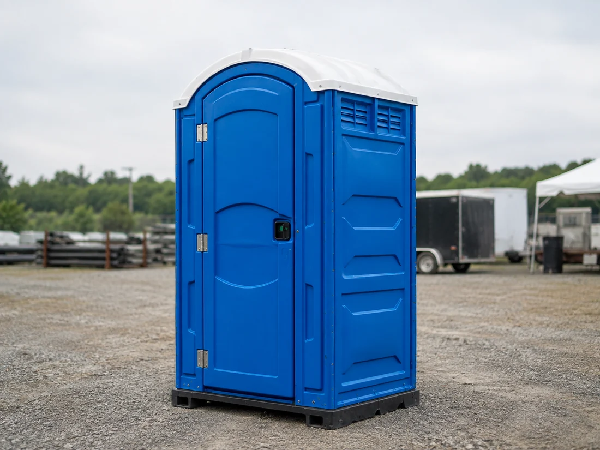
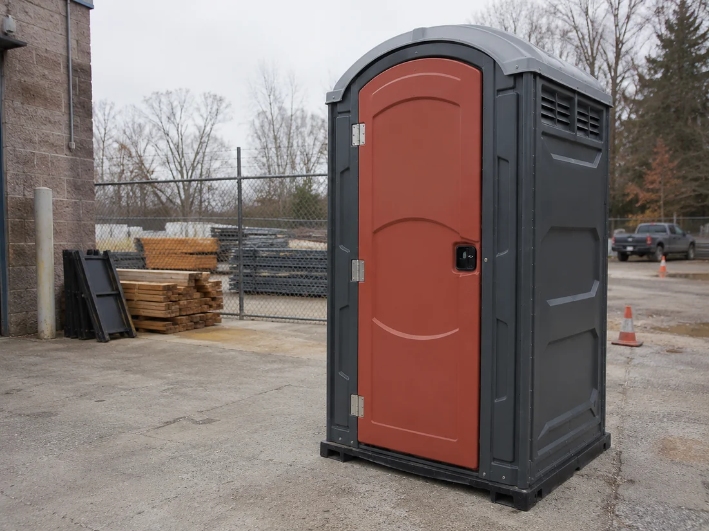
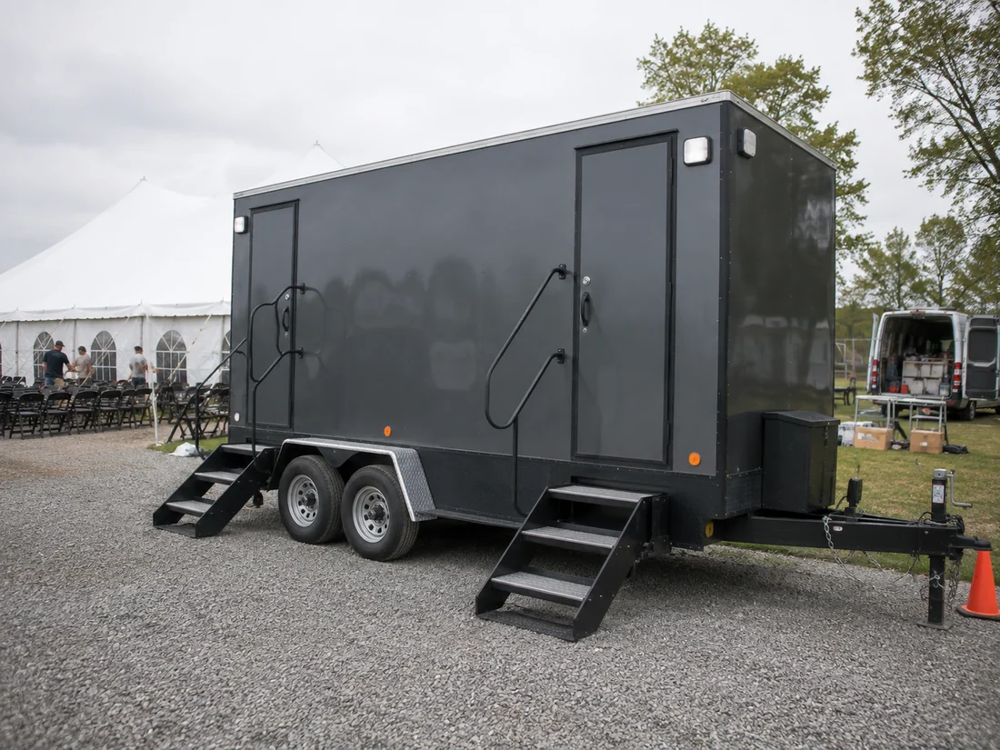
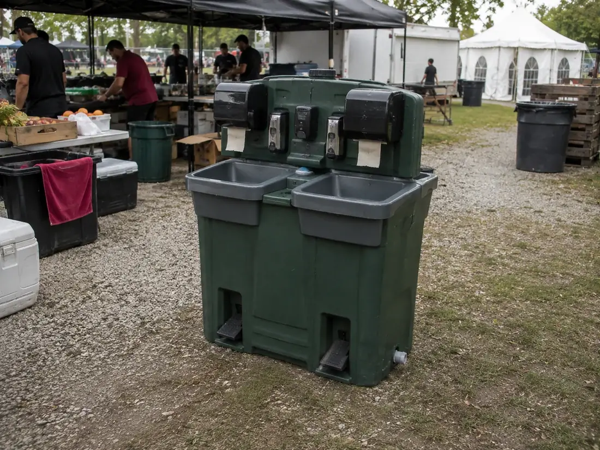
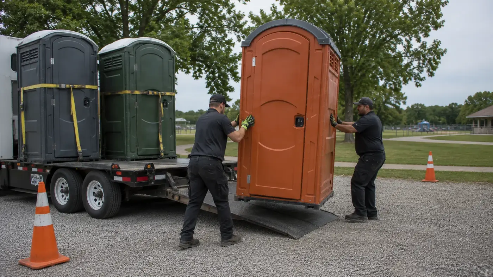
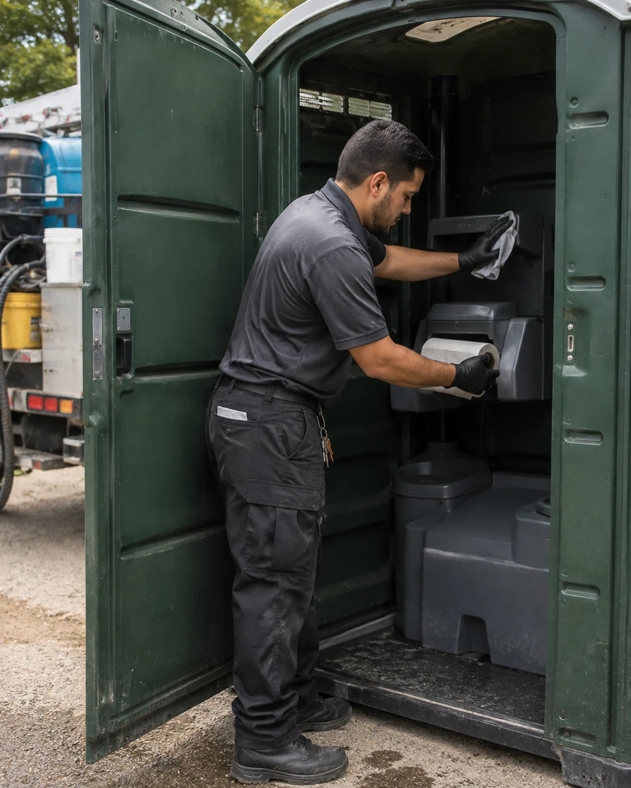

01
Clean & SanitizedPrepared before every delivery
Clean portable restroom rentals for construction sites, outdoor events, weddings, private gatherings, and long-term projects—with responsive support from delivery to pickup.
Choose standard portable toilets, ADA-accessible units, luxury restroom trailers, and handwashing stations for your people, timeline, and budget. Compare every option on our rental services page.

A clean, durable portable toilet rental for construction projects, festivals, parks, and everyday use.
View rental details →
A spacious portable restroom with ground-level access and thoughtful interior clearance for inclusive use.
View rental details →
An upgraded portable bathroom rental with climate-controlled comfort for weddings, corporate events, and VIP spaces.
View rental details →
A convenient hygiene add-on with fresh water, soap dispensers, and hands-free foot pumps.
View rental details →Star Portable Restrooms helps customers compare portable bathrooms, plan quantities, confirm delivery access, and choose a practical service schedule. Call with your location and dates for current availability and straightforward rental pricing.
☎ Call +1 (833) 920-1299Searching for porta potties near you? Share the delivery ZIP code, dates, and site type so our team can confirm local inventory, route availability, and delivery pricing.
Keep crews supported with job-site portable toilets, scheduled pumping and cleaning, supply restocking, and flexible quantities as the project changes.
Plan portable restroom rentals for weddings, festivals, sports, private parties, and community events based on attendance, duration, alcohol service, and accessibility.
Choose luxury restroom trailers when guests need upgraded interiors, sinks, lighting, climate control, and a more comfortable portable bathroom experience.
From construction porta potties to event restroom rentals, our team helps plan unit counts, delivery timing, placement, service frequency, and pickup. Work through our planning checklist before you book.
Reliable recurring service that keeps crews comfortable and work sites running smoothly.
Clean, discreet solutions sized around your venue and guest count.
High-capacity planning for busy public spaces and multi-day events.
Convenient temporary restrooms for remodels, backyard parties, and family celebrations.
Flexible restroom setups for tournaments, recreation areas, races, and seasonal programs.
Scheduled sanitation service for warehouses, utility work, maintenance crews, and remote sites.
Spacious ADA-accessible units for inclusive events, public spaces, and active job sites.
Responsive restroom and handwashing support for outages, relief sites, and temporary operations.

Share your project type, dates, estimated attendance, and service address.
We’ll recommend the right mix of units and explain straightforward pricing.
Our team coordinates placement, scheduled cleaning, and timely pickup.

Every unit is inspected, stocked, and prepared to arrive ready for use.
We built Star Portable Restrooms around the details that matter most: dependable communication, clean equipment, and service that follows through.
Know what to expect before, during, and after delivery.
Routine cleaning and restocking based on actual site demand.
Adjust quantities and service frequency as your project evolves.
Get straightforward answers about rental cost, nearby availability, rental periods, restroom trailers, placement, and proper use. For sizing, our ratio guide works through crew size, attendance, and event length in detail.
☎ Call +1 (833) 920-1299Porta potty rental cost depends on the unit type, quantity, rental length, delivery distance, site access, and cleaning schedule. A standard unit for a one-day event is priced differently from a serviced monthly rental, so the most accurate price comes from a project-specific quote.
Call with your delivery ZIP code, rental dates, project type, and expected attendance or crew size. Local inventory, delivery pricing, and service availability depend on the address and current route capacity.
Yes. Portable toilet rentals can cover one-day events, multi-day gatherings, monthly construction projects, and longer-term needs. Ongoing rentals can include scheduled pumping, cleaning, deodorizing, and supply restocking.
Yes. Restroom trailer rentals are suited to weddings, corporate events, VIP areas, and projects that need upgraded comfort. Trailer size, power, water, access, and site requirements should be confirmed before delivery.
One-day porta potty pricing varies by unit style, quantity, event date, delivery location, and pickup timing. Standard units are usually the most economical option, while ADA units, handwashing stations, and restroom trailers change the total quote.
A monthly porta potty rental can include delivery, setup, the rental period, scheduled pumping and cleaning, supply restocking, and pickup. Monthly cost changes with service frequency, usage, unit count, and travel requirements.
The right porta potty ratio depends on attendance or crew size, event duration, alcohol service, accessibility needs, and servicing frequency. Tell us your headcount and schedule so we can recommend a practical mix of standard and ADA-accessible units.
Yes. Standard toilet paper is intended for porta potty use. Avoid putting wipes, paper towels, feminine hygiene products, trash, chemicals, or other objects into the tank because they can interfere with pumping and servicing.
Portable toilets are generally designed for outdoor placement. Any indoor setup should be approved in advance by the rental provider and venue, with suitable ventilation, level access, service clearance, floor protection, and compliance with applicable building and event requirements.
Call with your event or project details for availability, unit recommendations, and clear rental pricing.
Choose a state for portable toilet options, delivery planning, major service markets, local FAQs, and a direct availability call.
Availability, inventory, and delivery pricing are confirmed for the exact ZIP code. State pages do not represent staffed local offices.